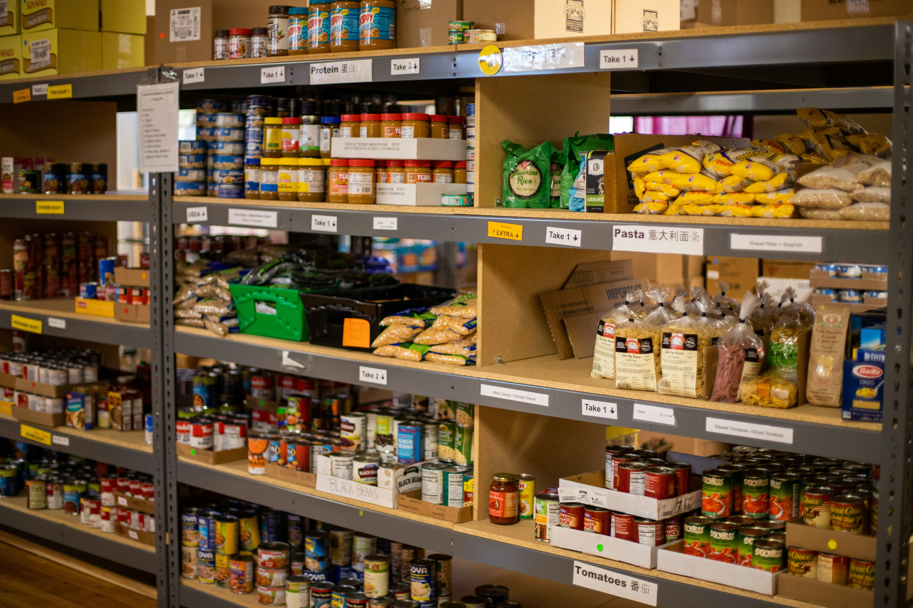

Week of May 5
Food Assistance · Parsippany
St. Peter's Food Pantry
Food Pantry
St. Peter's Food Pantry provides supplemental groceries and essential food items to local residents through scheduled weekday service by appointment.
- Supplemental groceries
- Monthly food support
- Appointment-based assistance